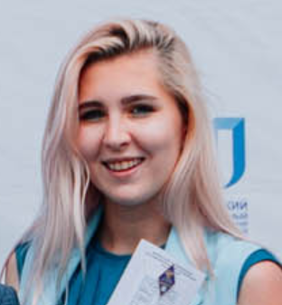

Информационные системы и технологии в административном управлении
Краткие сведения об образовательной программе
Программа бакалавриата по профилю подготовки «Информационные системы и технологии в административном управлении» включает в себя изучение теоретических основ и приобретение практических навыков разработки программного обеспечения, создания и эксплуатации информационных систем и технологий, предназначенных для решения разнообразных задач: от автоматизации бизнес-процессов, до разработки мобильных и web-приложений и создания информационных технологий поддержки принятия решений.
В ходе обучения студенты учатся применять языки (C, C++, C#, Java, PHP, JavaScript, Python, Kotlin) и технологии программирования, в том числе web-технологии, технологии анализа данных и искусственного интеллекта.
Возможные места прохождения производственной практики
- ISPsystem
- КРОК
- En+
- Yandex
- ИАЗ
- Rkit
- 1PS.ru
Отзывы выпускников
 Анна очень гордится своим званием "Лучший выпускник". Она считает, что ИРНИТУ - это университет возможностей, который дал ей мотивацию и вдохновение, а также предоставил возможность участвовать в научных и культурных проектах. По словам Анны, когда она поступала в университет, она была одним человеком, а сейчас, по окончании обучения, она - совершенно другой человек. Благодаря ИРНИТУ Анна смогла раскрыться как личность. Во время учебы каждый студент имел возможность не только получить необходимый опыт для дальнейшей работы, но и обогатить свою жизнь участием в интересных событиях.
Сергей рад поделиться своим опытом. Мои годы в университете были насыщенными и пролетели незаметно. Благодаря знаниям, полученным в ИРНИТУ, я смог основать свое собственное предприятие, которое занимается разработкой инновационного программного комплекса QLines. Данный продукт предназначен для быстрого и эффективного обнаружения поврежденных участков на воздушных линиях электропередач. Программный комплекс был разработан в конце 2017 года и получил грант Фонда содействия инновациям. В настоящее время я активно продвигаю этот проект на рынке.
Кем работают наши выпускники:
- Разработчик ПО
- Desktop-разработчик
- Android/iOS-разработчик
- VR-разработчик
- Web-разработчик
- Web-аналитик
- UX-специалист
- 1С-разработчик
- Системный аналитик
- Data Engineer
- Data Scientist
- QA-специалист
- Менеджер ИТ-проектов
- DevOps